11 Adding Menu Controls¶
In the previous chapter, you created a document-based app. You imported a package to convert Markdown to HTML, and you added controls to allow the user to select a preview style. You even included an AppKit view in the SwiftUI app.
In this chapter, you’ll dive deeply into menus. In Section 1, you added menus to your app, so some of this is familiar to you. But those menus applied app-wide settings only. Now you’ll learn some different menu tricks, as well as how to track the active window so you can apply menu actions to that window only.
Adding the Style Files¶
The web view renders the HTML using a default style, but it’d be nice to have the ability to choose your own styles by using Cascading Style Sheets (CSS).
Open your project from the last chapter or open the starter project in the downloaded materials for this chapter.
Next, open the assets folder in this chapter’s downloads and locate the StyleSheets folder.
Drag this folder into your Project navigator, selecting Copy items if needed, Create groups and the MarkDowner target:
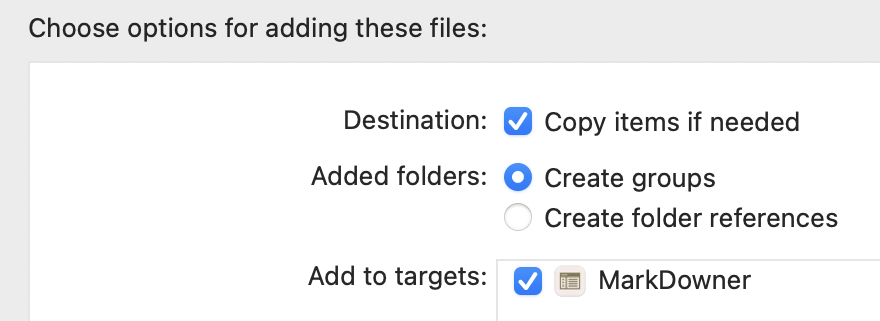
This new folder contains a set of CSS files, with some different styles, and a .swift file that sets up an enumeration for these styles. You’ll use the data in this enumeration to generate menu items.
Creating a New Menu¶
You’re going to have a lot of menu code, so to hold it all, create a new Swift file called MenuCommands.swift. Replace its contents with:
// 1
import SwiftUI
// 2
struct MenuCommands: Commands {
// 3
var body: some Commands {
// 4
EmptyCommands()
}
}
What does this do?
- Import SwiftUI since the menus are part of the SwiftUI framework.
- Create a
MenuCommandsstructure, conforming toCommands, so that SwiftUI recognizes this as something that can appear in a menu. - Add a
bodythat also conforms toCommands. - Return an empty menu to avoid errors.
This sets up the basic structure for your menus. Now, you can start to create them. But before you can change the style sheet, you need a way to store the user’s choice.
First, add this to the top of MenuCommands, before body:
@AppStorage("styleSheet")
var styleSheet: StyleSheet = .raywenderlich
This sets up a property using the @AppStorage property wrapper. As you’ve seen earlier, this property wrapper automatically saves its value to UserDefaults and retrieves it when needed.
Generating Menu Items¶
Next, you’re going to use the enumeration to create the items for this new menu. Replace EmptyCommands() with:
// 1
CommandMenu("Display") {
// 2
ForEach(StyleSheet.allCases, id: \.self) { style in
// 3
Button {
// 4
styleSheet = style
} label: {
// 5
Text(style.rawValue)
}
// keyboard shortcut goes here
}
// more menu items
}
// more menus
Stepping through these lines, you:
- Create a new menu, setting its title to Display.
- Loop through the cases in the
StyleSheetenumeration. Since this enumeration doesn’t conform toIdentifiable, use each case as its own identifier. The cases are always unique and the order is never going to change, so this can’t cause a problem. - Create a
Buttonfor each style. - Apply an action to each button that sets the
styleSheetproperty. - Set the content of the Button to a
Textview showing therawValueof each style.
You’ve created a menu, but you haven’t told your app to show it. Open MarkDownerApp.swift and add this modifier to the DocumentGroup:
.commands {
MenuCommands()
}
This attaches MenuCommands to the DocumentGroup. Any menu or menu item that you add to the structure now appears in the main menu bar.
Build and run to check out your new menu:
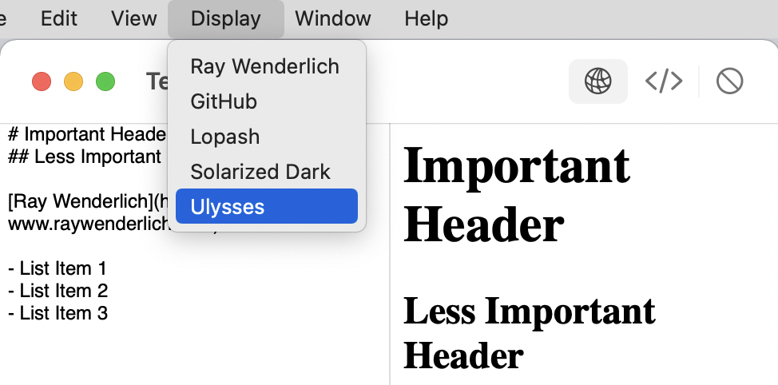
It looks good, and the neat thing is that it built itself using the cases in the StyleSheetenumeration, so if you add any new style sheets, they’ll appear in the menu automatically. But so far, your menu doesn’t do anything. :[
Styling the HTML¶
To get your WebView to use the selected style, open WebView.swift.
Start by giving it access to the stored setting by adding this declaration at the top:
@AppStorage("styleSheet")
var styleSheet: StyleSheet = .raywenderlich
When you looked at the HTML code generated by the MarkdownKit package, you may have noticed that it had no <head> section. Since that’s where an HTML file specifies its styles, you’ll have to create that section manually, before the WebView loads the HTML string.
Add this computed property to WebView:
var formattedHtml: String {
return """
<html>
<head>
<link href="\(styleSheet).css" rel="stylesheet">
</head>
<body>
\(html)
</body>
</html>
"""
}
This uses Swift’s multi-line string syntax to wrap the html and styleSheet properties into a complete HTML document. Because you set the web view’s baseURL to the app’s Bundle.main.resourceURL, the file name, without any folder path, is enough to locate the CSS file.
Next, you have to tell the WebView to use this version of the HTML, so replace updateNSViewwith this version:
func updateNSView(_ nsView: WKWebView, context: Context) {
nsView.loadHTMLString(
formattedHtml,
baseURL: Bundle.main.resourceURL)
}
And now you can test it. Build and run the app, make sure you have some sample Markdown and test all the styles:
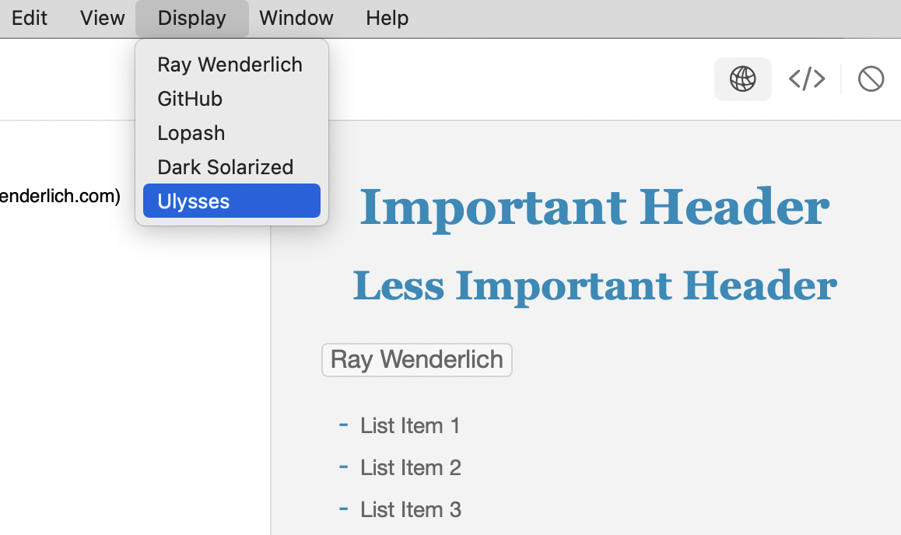
Adding Keyboard Shortcuts¶
Back in Section 1, you added a menu that used a Picker. This gave you a checkmark beside the selected choice, but didn’t allow for keyboard shortcuts. Since this is an editor app, it’s more important that users can keep their hands on the keyboard, so having keyboard shortcuts is the priority.
Earlier in this book, you added a keyboard shortcut using this syntax:
.keyboardShortcut("t", modifiers: .command)
You probably assumed the first parameter was a String, but it’s not. It’s actually a KeyEquivalent, which you can initialize with a Character. This makes generating dynamic shortcuts more complicated than expected, but here’s how you can do it.
In MenuCommands.swift, replace // keyboard shortcut goes here with:
.keyboardShortcut(KeyEquivalent(style.rawValue.first!))
This line is doing a lot of work!
Working from the inside out, style.rawValue.first gets the first character of the style’s rawValue. Since this has to exist to show the menu, force unwrapping is safe here although it’s not usually a good practice.
Next, you initialize a KeyEquivalent using this character, and finally, you have the right type of object to pass to the keyboardShortcut modifier.
The command key is the default modifier key for any shortcut, so it’s not strictly necessary to include it in the call.
Build and run now to see your shortcuts in the menu. Test them all:
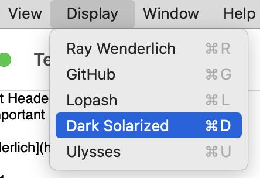
Even though you’ve decided to prioritize keyboard shortcuts over check marks, you can still use styling to indicate the current selection. You don’t want to add a check mark to the text manually. It appears in the wrong place and looks wrong. But you can modify the text in the menu item Button.
Text in a menu item ignores a lot of style modifiers, but it can use different colors.
Add this modifier to Text(style.rawValue):
.foregroundColor(style == styleSheet ? .accentColor : .primary)
Build and run now to see the active style sheet clearly indicated:

Because this uses semantic color names, it works in both light and dark modes. Interestingly, it’s not using the actual accent color, which is blue on this system, but is using a contrasting color that shows up even when you mouse over the menu item and color its background.
Inserting a Submenu¶
Another useful feature would be the ability to change the editor’s font size. You’ll add this to the Display menu as a submenu, with items to increase, decrease and reset the font size.
This is another app-wide setting, so start by defining another @AppStorage property at the top of MenuCommands:
@AppStorage("editorFontSize") var editorFontSize: Double = 14
Next, replace // more menu items with:
// 1
Divider()
// 2
Menu("Font Size") {
// 3
Button("Smaller") {
if editorFontSize > 8 {
editorFontSize -= 1
}
}
// 4
.keyboardShortcut("-")
// 5
Button("Reset") {
editorFontSize = 14
}.keyboardShortcut("0")
Button("Larger") {
editorFontSize += 1
}.keyboardShortcut("+")
}
And what is this code doing?
- Add a separator line to the menu to make it clear the next entry isn’t part of the style sheets group.
- Create a submenu called Font Size.
- Add a
Buttonto reduce the font size with a lower limit. - Give it a keyboard shortcut. Command-Minus, Command-Plus and Command-Zero are commonly used for changing and resetting sizes.
- Insert two more buttons to reset the font size back to the default and to increase the size.
This gives you the interface to set the required font size, so now you must apply it.
Open ContentView.swift and add the property declaration at the top of the structure:
@AppStorage("editorFontSize") var editorFontSize: Double = 14
Apply this modifier to the HSplitView, just before the toolbar modifier:
.font(.system(size: editorFontSize))
Build and run and check out your new submenu. Select items to change the font size and use the keyboard shortcuts too. Switch the preview to HTML code view, and you’ll see that the font size setting applies there too:
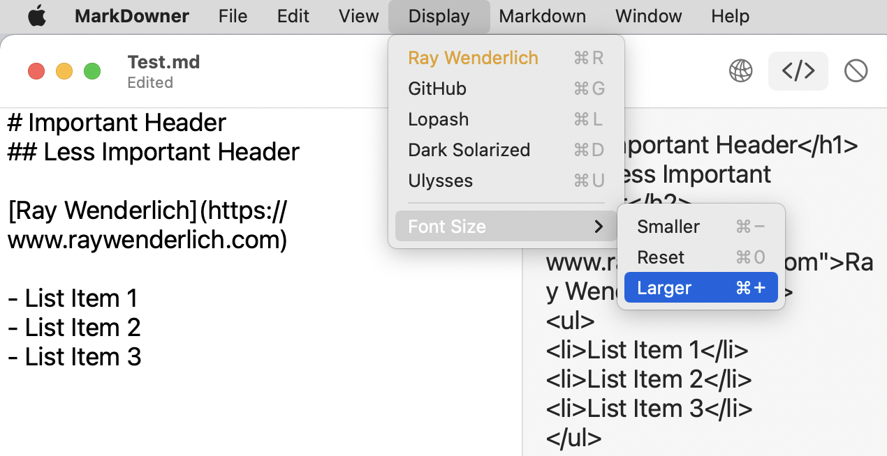
Using the Help Menu¶
Back in Section 1, you removed the Help menu item as it didn’t do anything useful. In this app, you’ll make it show a new window that actually provides some useful information.
But before you can do that, you need to upgrade your WebView so it can display a live web page as well as an HTML string.
In the Project navigator, delete WebView.swift, moving it to trash.
Next, open the assets folder for this chapter in the downloaded materials and drag the new version of WebView.swift from there into your Project navigator.
The new feature is that you now initialize WebView with two optional parameters: either an HTML string or a web address. updateNSView(_:context:) uses one of them to populate the view.
With this in place, you can replace the Help menu item.
In MenuCommands.swift, replace // more menus with:
// 1
CommandGroup(replacing: .help) {
// 2
NavigationLink(
// 3
destination:
WebView(
html: nil,
address: "https://bit.ly/3x55SNC")
// 4
.frame(minWidth: 600, minHeight: 600)
) {
// 5
Text("Markdown Help")
}
}
What’s going on here?
- Use a
CommandGroupto insert a menu item into one of the standard menus. Here, it replaces thehelpmenu item. - Insert a
NavigationLinkas the menu item. - The
NavigationLinknavigates to aWebViewwith a URL that points to a Markdown cheat sheet. - Set the minimum frame for the new window.
- Use a
Textview for the menu item title.
Build and run the app, and test your new help menu item:
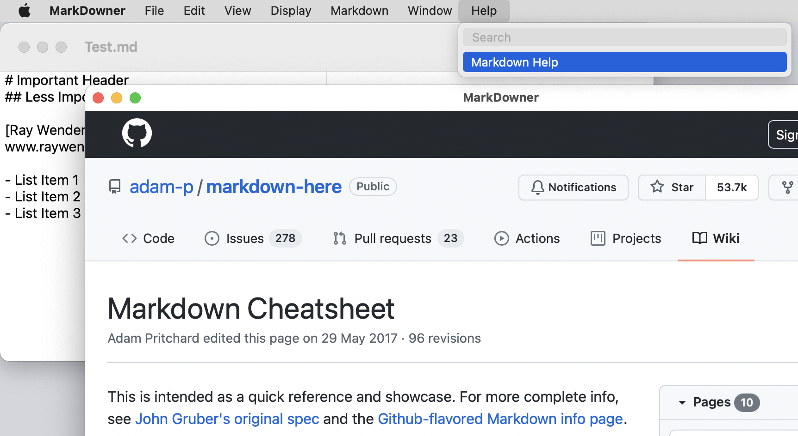
You’ve seen how menu items can be many different types of SwiftUI view. Most commonly you’ll use a Button, but Toggles and Pickers are also useful, and you can use a Menu to add a submenu.
Now, you’ve seen how a menu item can also be a NavigationLink. This is how you get a menu item to open a new window. The view inside the new window can be any SwiftUI view.
Focusing on a Window¶
So far, all the menu items you’ve added apply their actions to the entire app. But this is a document-based app, so you’ll want to direct some menu items to the active window only. How can you tell which is the active window?
Apple’s documentation suggests using @FocusedBinding. This works — sometimes. The problem seems to be that it only detects when the focus changes to a brand new window. Opening the app with windows already open fails to detect an active window, and sending the app to the back and then bringing it to the front also fails.
Fortunately, there is a Swift package called KeyWindow and it works all the time. It uses AppKit observers to track when a window comes to the front and exposes this via a custom EnvironmentKey. The author of this package explains the process in this article on Reading from the Window in a SwiftUI lifecycle app.
So now, you’re going to import the package and put it to use.
As you did when importing the MarkdownKit package, select the project at the top of the Project navigator and click the project, not the target.
Select Package Dependencies across the top and click the + button to add a second package to your project.
Enter this URL into the search box:
https://github.com/LostMoa/KeyWindow
You’ve already loaded one package, so this time, you’ll see two listed. Make sure to select the KeyWindow package before clicking Add Package:
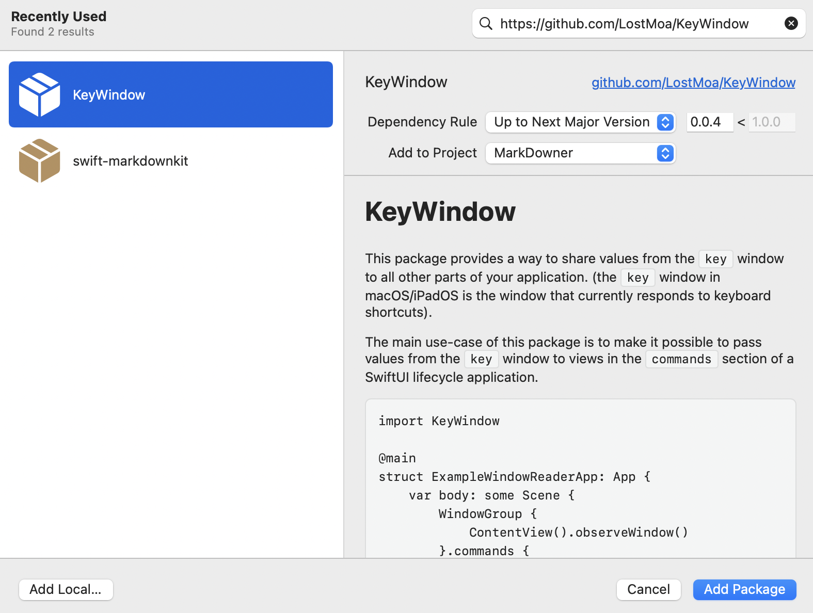
The Library is already checked in the next dialog, so click Add Package again to add it to your project. You now have two package dependencies listed:
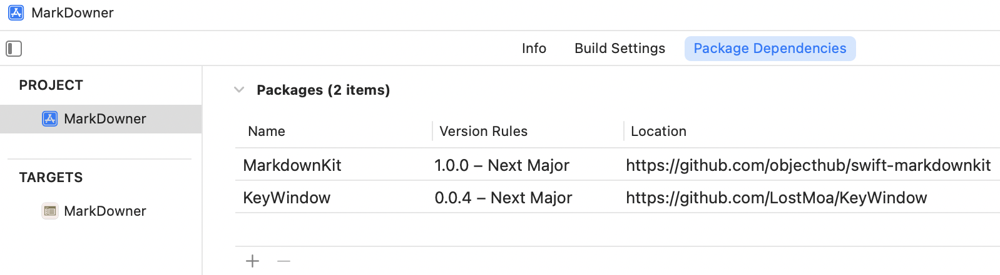
Next, there is a bit of setting up to do before you can start tracking the active window.
Configuring the Library¶
Start by opening MarkDownerDocument.swift and importing the new package by adding this line at the top of the file:
import KeyWindow
Next, add this extension outside the existing structure:
extension MarkDownerDocument: KeyWindowValueKey {
public typealias Value = Binding<Self>
}
This defines a binding to MarkDownerDocument as a valid type for a new KeyWindowValueKey. You’d use a very similar piece of code to define a custom EnvironmentKey, although in that case, you’d probably set a default value and let Swift work out the type from that. Here the default is nil, so you have to specify the type.
Now, open MarkDownerApp.swift and add the following with the other import statements:
import KeyWindow
Then change the contents of DocumentGroup to:
ContentView(document: file.$document)
.observeWindow()
You haven’t changed ContentView, but you’ve applied a new modifier to it. This allows KeyWindow to observe its window.
Finally, open ContentView.swift. Add this modifier to HSplitView, just after the fontmodifier:
.keyWindow(
MarkDownerDocument.self,
$document)
This keyWindow modifier publishes the key window information. You give it two parameters — a key-value pair. The key is the type of the object that you set up as a KeyWindowValueKey. The value is the object itself: A binding to your document.
All the parts are in place now, so you can actually use them in your menus to target the front window.
Adding a Window-specific Menu¶
In MenuCommands.swift, add the following at the top to import the library:
import KeyWindow
Next, add this property definition at the top of MenuCommands:
@KeyWindowValueBinding(MarkDownerDocument.self)
var document: MarkDownerDocument?
This uses a custom property wrapper to give you access to the key window’s document, if it exists. You can use this in your menu actions.
The MenuCommand structure is getting long, but you can make it easier to navigate using code folding. If you don’t see the code folding ribbon, go to Xcode’s Preferences ▸ Text Editing ▸ Display and check Code folding ribbon. Now, click in the column between the line numbers and the code to collapse sections:
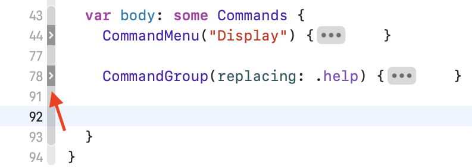
Add some blank lines after the CommandGroup and insert this:
// 1
CommandMenu("Markdown") {
// 2
Button("Bold") {
// 3
document?.text += "**BOLD**"
}
// 4
.keyboardShortcut("b")
// 5
Button("Italic") {
document?.text += "_Italic_"
}.keyboardShortcut("i", modifiers: .command)
Button("Link") {
let linkText = "[Title](https://link_to_page)"
document?.text += linkText
}
Button("Image") {
let imageText = ""
document?.text += imageText
}
}
Taking this step by step, you:
- Create a new menu titled Markdown.
- Add a Bold menu item.
- Append some text to the focused document, if it exists.
- Apply a standard keyboard shortcut.
- Make some more buttons in the same way. The Markdown syntax for images is very similar to the syntax for links so these are especially useful.
Build and run the app. Open a new window so you have at least two windows open. Then, try out the new menu:
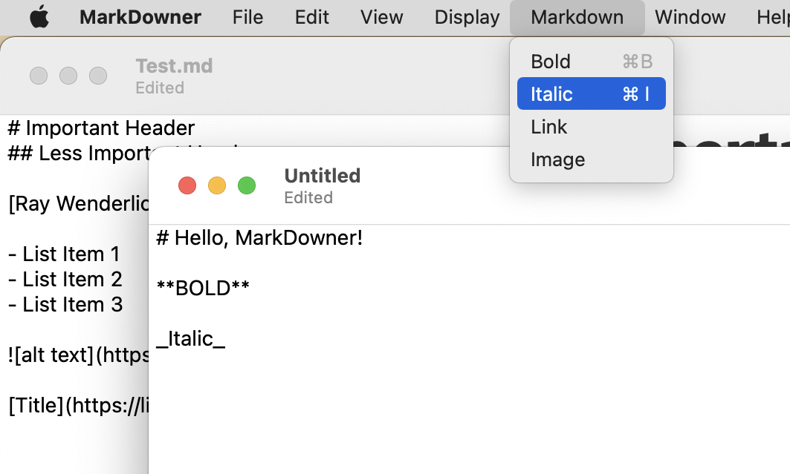
Great work. There was a lot happening there, but you made it through, and now you have a menu that targets the frontmost window only.
Exporting the HTML¶
You can type Markdown and preview this as HTML, but you may want to export the HTML code for use on a web site.
Open MenuCommands.swift and collapse the new CommandMenu. Insert some blank lines after it and then add this:
// 1
CommandGroup(after: .importExport) {
// 2
Button("Export HTML…") {
// exportHTML()
}
// 3
.disabled(document == nil)
}
What does this do?
- Create a new
CommandGroupafter theimportExportgroup. This places it at the end of the File menu. - Add a
Buttonto export the HTML. This will open a save dialog, and conventionally if a menu item or button is going to ask for further information, its title ends with an ellipsis. - Disable this menu item if there is no focused document.
Build and run to check out your new menu item in the File menu:
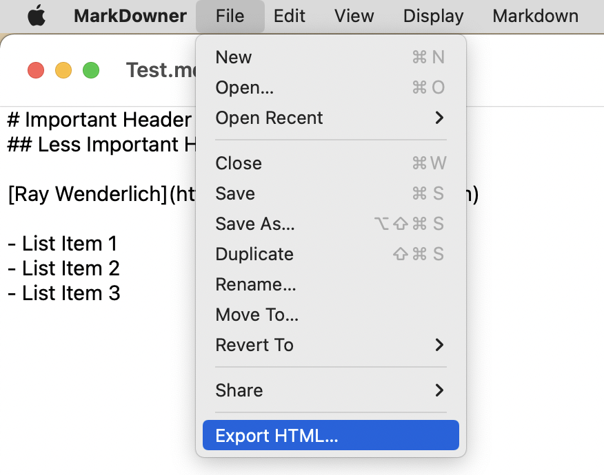
Close all your windows and you’ll see that the Export HTML menu item is disabled.
The menu item is in place, so now you need to make it work.
Add this new method to the end of MenuCommands, outside the body:
func exportHTML() {
// 1
guard let document = document else {
return
}
// 2
let savePanel = NSSavePanel()
savePanel.title = "Save HTML"
savePanel.nameFieldStringValue = "Export.html"
// 3
savePanel.begin { response in
// 4
if response == .OK, let url = savePanel.url {
// 5
try? document.html.write(
to: url,
atomically: true,
encoding: .utf8)
}
}
}
So what’s happening here?
- Check to see if there’s an active document. There should always be one, because the menu item is disabled if not, but it’s better to be sure.
- Create an
NSSavePanel, which is the standard system save dialog. Give it a title and set the default name for the file. - Display the save panel and wait for a response.
- Check if the response was
.OK, which is short forNSApplication.ModalResponse.OK, and that the user chose a URL. - Try to write the document’s HTML code to the URL.
The last step is to use this method. Uncomment the // exportHTML() line in the button’s action so it can call the new method.
Time to test it. Build and run the app. Open a document or create a new one with some Markdown. Then select Export HTML… from the File menu:
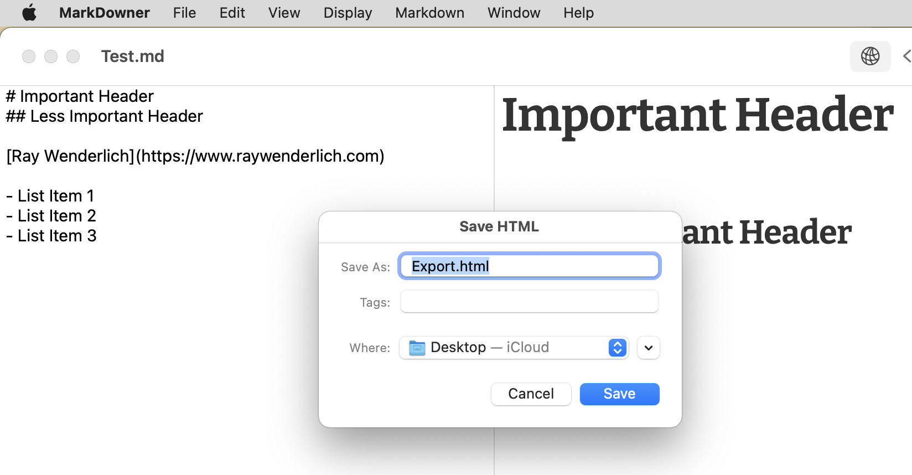
Once you’ve saved the file, double-click on it to open it in your default browser:
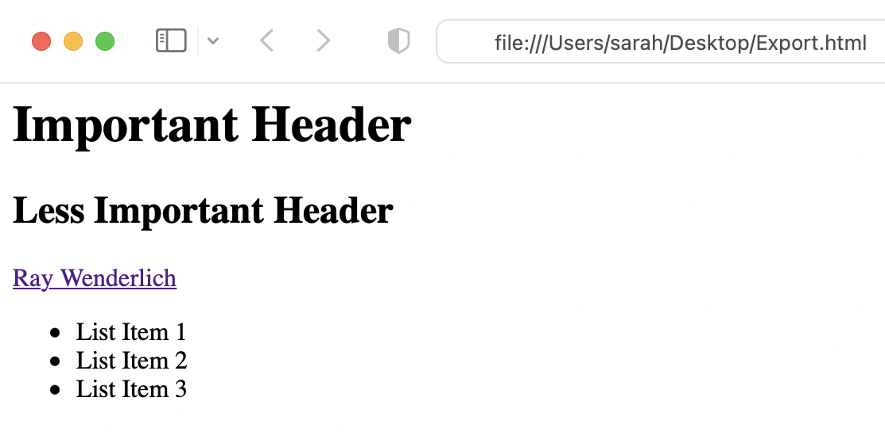
You may be wondering why the sandbox doesn’t restrict you from saving this file in certain locations. By default, the sandbox allows Read/Write access to User Selected Files. This means that so long as you ask the user to choose a file location, you can save anywhere they want.
Note
If you include any local images in your Markdown, they don’t show up in the web preview, due to Apple’s security settings. But they appear as expected in the HTML export.
Coding for the Touch Bar¶
A lot of MacBooks have a touch bar, and it’s frequently used to provide auto-complete suggestions or formatting options. So, it would be a neat touch to have some of your Markdown menu items available in the touch bar too.
You may be wondering how you can test this if you don’t have a Mac with a touch bar, but Xcode has this covered. Open the Window menu and go to Touch Bar ▸ Show Touch Bar, or press Shift-Command-8 to open a full touch bar simulator that works with all the apps on your Mac:
Adding commands to the touch bar is very similar to adding commands to a menu. But where you used text labels in the menu, you can use styled characters and icons in the more graphical touch bar.
Open the assets folder in the downloaded materials for this chapter and drag TouchbarCommands.swift into your project.
Looking at the file, you’ll see that unlike MenuCommands, this doesn’t have to conform to any special protocol. You can display any SwiftUI view in the touch bar, which opens up a lot of possibilities.
The TouchbarCommands structure has access to the key window’s document, like MenuCommands does, and it has the same four abilities that the Markdown menu has but with different button labels.
Now that you have this structure, open ContentView.swift and add this modifier to HSplitView:
.touchBar {
TouchbarCommands()
}
That’s all you need to do to apply a touch bar to this view. This sets it to use the commands you just added, alongside the default touch bar commands.
Build and run the app to check them out:
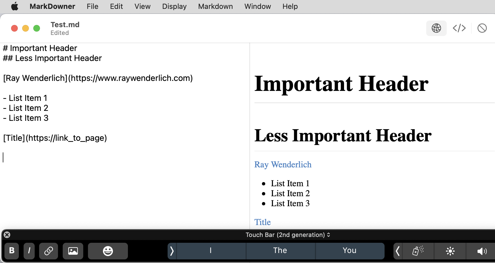
There are a lot of MacBooks out there with touch bars and SwiftUI makes it easy to support them, so why not do it.
Challenges¶
Challenge 1: Keyboard shortcuts¶
When you added the Display menu, you created keyboard shortcuts for every menu item. Since then, you’ve added new menu items to the File and Help menus and they have no shortcuts. You also created a Markdown menu and only some of the items there have shortcuts.
Work your way through MenuCommands and add keyboard shortcuts to as many items as you can.
Challenge 2: More Markdown snippets¶
The Markdown menu has a few snippets, but it’d be good to have more. Add a Headers submenu that inserts the various header types. Header 1 starts with 1 #, Header 6 starts with 6 #s. You can use the header level number as the shortcut.
Adding a divider line can be tricky because the most common format is three dashes, but macOS tries to do clever things and converts this into an em-dash or en-dash. So add a menu item to enter a divider line, not forgetting to add line feeds before and after, using "\n".
Key Points¶
- The default macOS document app gets a standard suite of menus, but you can add to them in lots of useful ways.
- An enumeration can automate the creation of a menu. This can even extend to generating keyboard shortcuts.
- Include a
Menuin a menu item to create a submenu. - Using a
NavigationLinkas a menu item allows you to open a new window containing any SwiftUI view. - Keeping track of the frontmost window isn’t an easy task and Apple’s mechanisms don’t always work.
- Once you know which window is the active one, you can target it directly from menu items. This allows you to have window-specific menu items.
- When saving a file, use an
NSSavePanelto request the save path from the user. When you ask the user to select a file, your app can write to that file, even though it’s outside the app’s sandbox container. - A lot of MacBooks have a touch bar and SwiftUI makes it easy to add to the default touch bar controls.
Where to Go From Here?¶
Well done! You’ve reached the end of another section, and you’ve completed a new app. If you’ve been working through the book in order, you’ve now got three working apps in three very different styles.
This section introduced you to a document-based app and used some new SwiftUI features to create a neat Markdown editor that will only get better as Apple improves and extends the SwiftUI components.
In the next section, you’re going to build an app that allows you to do things you could never dream of doing in an iOS app. You’re going to run Terminal commands from within your app. This will enable you to provide a GUI for some obscure, but useful, commands.